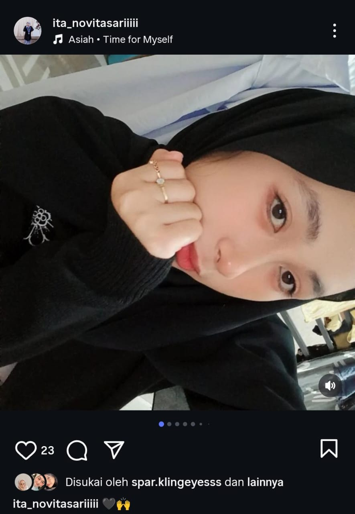
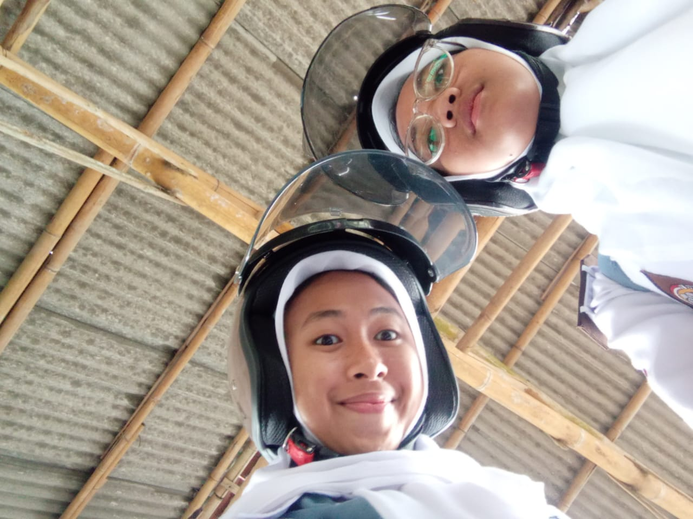

System Booting... Loading Birthday Surprise Pink Edition... Nama kamu Anita Novita Sari?
Ya, itu aku
Apakah kamu siap menjelajahi layar ini?
Siap dong ➜
Preparing surprise...
3
🎂
Lanjut ➜

HAPPY BIRTHDAY ANITA NOVITASARI!🎀
Lanjut ➜

For You, My bestie and my sister🎀
Lanjut ➜
✨ FINISH ✨